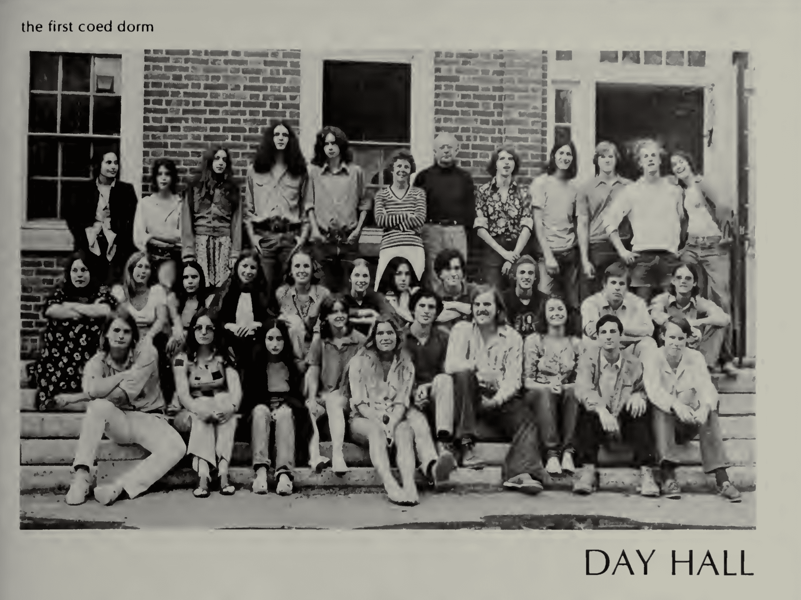

Housing at Phillips Academy
The Existence of Differences Is Universally Agreed Upon
Factors Influencing Dorm Choice
Underclassmen and Upperclassmen

Note: this webpage is best viewed on a desktop device.
Dorm life is arguably the most important part of a student's time here at a boarding school like Phillips Academy. However, experiences with residential life here are not uniformly positive, and the apparent opaqueness of the residential system does little to address student concerns. Dorm stereotypes persist, even through many iterations and revisions of the dorm assignment process. In our investigation, we examined student beliefs about the housing process and reached out to P.A. faculty, as well as faculty from other boarding schools and colleges, about the housing system. Our group of six students at the Workshop analyzed the agenda of the school administration and aimed to find places in which bias—conscious or unconscious—exist within the current dorm assignment system at Andover. Through our investigation, we examined factors and dynamics that shape both the current housing system and its repurcussions. Below, we detail the results of our investigation, in the hopes that this document may provide a springboard for public conversation about Andover's housing process.
The current housing system
At the time of writing, in the 2021-2022 school year, the housing process focuses on separating freshman/lowers and uppers/seniors. As students get older, they gradually have more and more housing options. Typically, 9/10 dorms and 11/12 dorms are large dorms with twenty or more students, whereas stacks are small dorms with room for at most around ten people that are only available to upperclassmen.
a visual explainer
In years prior, Andover used a lottery system—with some additional information—for dorm assignments. Students could, if desired, put down a roommate, rank their cluster preference, and state whether they preferred a small or large dorm. Then they would receive a lottery number, which would determine their priority in getting the dorm of their choice. Even if the numbers and, by extension, the dorm assignments, were random, students oftentimes felt that the lottery system was personal. To some extent, there were true loopholes in the system, including one where upperclassmen could pull in lowerclassmen in order to help them be placed into a desirable dorm.
on the old lottery system
And so, based on their luck, the number you drew, you could go to various dorms.
And that was a lot of drama too. I don't think you can escape drama, maybe, because housing feels really impactful to student experience.
Dr. Esty, on the old lottery system
The existence of differences is universally agreed upon
Everyone we interviewed agreed that differences exist between the dorms at P.A. Furthermore, each cluster is associated with its own stereotypes. Flagstaff is associated with the privileged, white elite and drug use; Pine Knoll with nature and people of color; and Abbot with theater and queer people. Some dorms also have their own reputations, especially as drug hotspots. To what extent these reputations are deserved are uncertain, but they are rather consistent amongst the students we polled. Moreover, the reputations of different dorms have likely changed drastically through the two years of the COVID-19 pandemic.

Most common words used to describe each cluster, from our survey.
At [dorm], I picture a few kids who do drugs peer pressuring other guys to do drugs and then by the end of the year all the [dorm] guys do drugs.
A student from our survey
homophily
Why these differences exist to begin with is our key question. To some extent, it can be explained by student choice and the natural tendency for similar people to seek out each other known as homophily. Students tend to choose dorms based on the current reputations of those dorms; they will likely choose dorms where they think they'll fit in—where people are similar to them. The natural result is for dorms to be segregated along racial and economic lines, as well as along different interests and levels of athleticism. A dorm's reputation is a self-fulfilling prophecy. It attracts students who fit that reputation to that dorm, perpetuating that dorm's status in the minds and hearts of students.
Just because this is natural does not mean it is desirable, however. Diverse communities are incredibly valuable, and all students have much to gain by living with many different types of people. On the other hand, communities dedicated to common interests or backgrounds can be incredibly fulfilling and meaningful. Thus a balance must be struck between comfort and exploration.
Through the years
Click on the name of a dorm on the right to track its evolution through time.Factors influencing dorm choice
A variety of factors influence student dorm choice. We will go over the main visible non-peer factors we identified below, but it is important to keep in mind that differences within dorms may be purposeful, constructive, and a direct result of student choice. For example, stacks tend to be rather homogenuous overall, but their composition is a deliberate choice of the people who apply to live in them.
location
Location is extremely important. Certain clusters or dorms are generally regarded as having more desirable locations than others. Flagstaff is usually considered desirable due to its proximity to the center of campus and Abbot undesirable due to its distance from campus; when asked to describe the Abbot cluster, "far" was the most frequent response. Pine Knoll's proximity to nature and the woods also makes it more desirable to students, and its woodsy surroundings were frequently mentioned by students in our survey.
Location also influences culture. Many people in Flagstaff are viewed as outgoing, whereas Abbot was characterized by more shy, introverted people. In one Flagstaff dorm, faculty reported that the students didn't really care for each other, whereas Abbot dorms had a very caring culture and chose the dorm for that culture opposed to the location.
house counselors
In the student survey, the perceived quality of house counselors played a role in the assessment of dorm quality. Both the quantity and quality of interactions between house counselors and students are important. Well-liked house counselors are seen as friendly and helpful and serve as mentors to the dorm's residents. In our conversations, Jenny Elliott, Dean of Students, mentioned house counselors as being a significant factor in student's dorm choices. She believed the strong relationships cultivated between students and house counselors was an important advantage of the old housing system.
Not all student interactions with house counselors are positive, however. Although we did not collect specifics, students in the survey we conducted had negative impressions of house counselors at certain dorms, as being unhelpful or mean. From the other point of view, in one interview, faculty reported students avoiding interaction with them. In order to develop a healthy, meaningful relationship with students, house counselors needed to persistently apply effort. However, from a faculty point-of-view, those who were most likely to cause trouble in the dorm were simultaneously the ones who needed the most help but also the most likely to rebuff adults. Professional development or training may not be enough; likely only experience will equip faculty to deal with messy, difficult situations.
all-gender housing
Co-ed dorms existed as early as 1975, the year from which this yearbook picture was taken. 1975 was only two years after the merger of Phillips and Abbot academies. It is unclear what happened to Day Hall in the years after this photo, but it is no longer a co-ed dorm.
A small proportion of students at P.A. are interested in all-gender housing. Five years ago, the current all-gender housing option at PA was proposed in a student's BRACE presentation to make housing more inclusive. Many transgender or queer students choose all-gender housing, but it is not strictly only for those students. According to Ms. Staffaroni, the organizer of all-gender housing, the intention of dorms such as Alumni is not to be simply a trans-affinity space, but also to normalize all-gender housing in general. Most dorms are still single-sex, however; there are currently only two all-gender dorms on campus, so students interested in all-gender housing have severely restricted choices.
Peer dynamics in dorms
While students exert influence on their dorms, they themselves are also changed by the dorm they live in. Some people we interviewed suggested that students within dorms are alike because of their influence on each other. Depending on the dorm, many times students will try to adapt and 'fit in' to that specific dorm's culture. During our interviews, faculty and staff noted that they saw a big difference in the way students presented themselves and acted before and after living in specific dorms.
underclassmen and upperclassmen
One of the driving reasons behind the switch from 10/11/12 dorms to 9/10 and 11/12 dorms is the potential for upperclassmen to negatively impact lowers new to the dorm. This outcome is by no means absolute and, according to 9/10 dorm house counselors, the main intention is to have lowers acting as mentors for the freshmen, preparing them to take on student leadership roles their upper year. There have been instances in 10/11/12 dorms, however, of lowers being drawn into drugs or other bad behaviors because of upperclassmen. In the previous system, becaues lowers were separated from their freshman dorm friends, their isolation made them vulnerable to negative influence from the upperclassmen.
Conclusion
We hope that this report contains valuable information that may enrich the public conversation about housing here at Andover. At any school, especially a diverse one like Phillips Academy, it is inherently difficult to for the housing process to satisfy all needs. Differences between the dorms exist, either through student choice, the natural development of similar friend groups, or because of peer influence after living in a certain dorm. A variety of factors influence student choice, including friends, location, house counselors, and the recent all-gender housing option. Ultimately, Andover's housing process must strike a delicate balance between freedom and guidance.
brief notes
We had 50 responses to the student survey. Answers are likely not wholly representative, especially for the question about the factor that most influenced dorm assignment.
Many yearbooks did not have dorm pictures, which is reflected in the interactive module.
Acknowledgements
Interviews and survey conducted by Adya, Alexa, Alex, Ralph and Sabby. Website and graphics designed by Ali and Sabby. Yearbook data collection by Ali. Writing was done by Adya, Alexa, Alex, and Ralph, and edited by Ali. Supervised by Dr. Zufelt. Thank you to Dr. Esty, Dean Elliott, Ms. Staffaroni, Dr. Fisher, Ms. Duffy, Ms. McKibben, Ms. Matkzin, Dr. Gardner, Ms. Creagh, Mr. El Alam, Mr. Dennehy, Ms. Fenton, Mrs. Heintz, Dean Ellinwood, as well as anyone not mentioned here, for taking time to answer our questions. Additional thanks to Ms. George, the Oliver Wendell Holmes Library, the D3 JavaScript library for powering our visualizations, and those who filled out our survey.
About
We are a group of six students supervised by Dr. Zufelt who chose to work on a project relating to bias in any way, shape, or form. Our group was organized by The Workshop at Phillips Academy, sponsored by the Tang Institute. We spent three weeks full-time working on this report.
Below, we compiled some brief self-reflections on our own backgrounds and how they may have affected our work on this project.
adya chatterjee
Being an Indian woman from Singapore, I grew up in a fairly conservative environment. With my mom and dad sharing ethnic backgrounds with a lot of historical tension, I was from a young age pushed in opposite directions around the idea of 'goodness'. Growing up with a single mother who went to Cathloic school as a child, my move to high school in the U.S proved a huge culture shock. However, with me she is expanding her own world view into an international, learning mindset rather than simply personal biases, fears, and cautiousness for the future.
alexa vinton
Where I am from shapes my bias. I come from a white upper class family from Palo Alto, California. I come from a lot of privilege. A lot of the way I perceive the world is similar to the way my parents perceive the world. Through their parenting, they passed down many values which they think are important. The most prominent being education and experiences. So now, as I go about my daily life, I value family, education, and the experiences I have with the people around me. I favor those values over others. I find myself constantly looking for my next adventure and leaning towards outdoor time over indoor time. Or I find myself looking to go to the "next big college" because of my parents value in education. These are just a few of my biases, there are a lot more that revolve around other parts of my identity. I am filled with bias.
alexandra koch-liu
My mother grew up in a conservative Chinese household and my father grew up in a traditional German household, however neither of them ever bring up topics surrounding race, gender, sex, or their personal political views. Even though I went to an international public school in Germany named after anti-apartheid and political leader Nelson Mandela, I still rarely engaged in discussions about those topics and was not encouraged to develop my own view on them. It was not until my time at Andover that I was encouraged to learn about different world views, educate myself on the various topics that were always taboo to talk about at home, and reflect on the influence that my mother's conservative Chinese culture and my primarily white community in Germany has had on my subconscious biases.
ali cy
I'm half-Chinese, half-white, and grew up with my mom (who is Chinese, and an immigrant from China). Growing up I always went to public school—sometimes I feel like I don't have the right "pedigree" for Andover, whatever that means. As an Asian-American who grew up in majority-white neighborhoods, I often felt like an outsider; Andover is the first place I haven't felt this way. Politically, I would describe myself as independent but left-leaning, and I'd say my beliefs don't really fit into a neat box. I come from a very STEM background that I think shapes the way I approach things.
ralph lam
Sailors' knots are notoriously difficult to undo and I believe I am still moored to my family. On the surface, to most people, they are nothing out of the ordinary, nothing too concerning. Perhaps, however, I was too close to shore at the time. During my time at boarding school, the waves slowly dragged me out to sea; I began to interrogate and question my upbringing, noticing the intersections between traditional Chinese culture and Conservative beliefs. The sailors knot is slowly being undone, gradually loosening, but I believe it might take a slightly greater force to pull it apart.
sabby clemmons
My parents have always allowed me to argue with them. At the dinner table, in the car on the way to soccer practice, any moment was a learning experience and my opinions as a child were acknowledged, never shut down. My mother grew up in the Philippines, the daughter of a teacher, and my father grew up in suburban Illinois, the son of an engineer. The emphasis on education, specifically reading a lot and having "good skepticism," was something that definitely impacted their politics and morals as well as mine. While my parents are left-leaning , I do notice certain apprehensions to topics that were considered taboo to talk about in the cultures they grew up in like the LGBTQ community or more socialized practices. (Mother grew up very Catholic and father grew up in nuclear family setting in the 60s.) I found that coming to Andover I had a similar approach with my politics and my morals, but now find it very easy to talk and grapple with the topics my parents are more apprehensive towards.